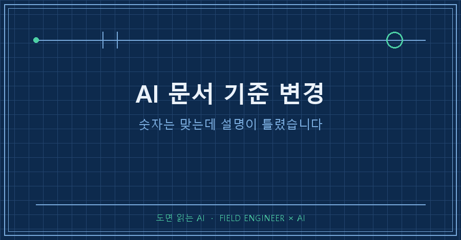
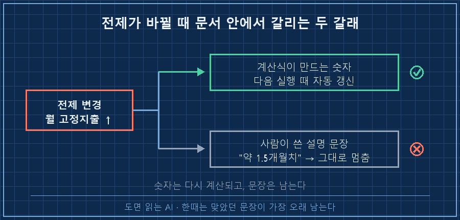
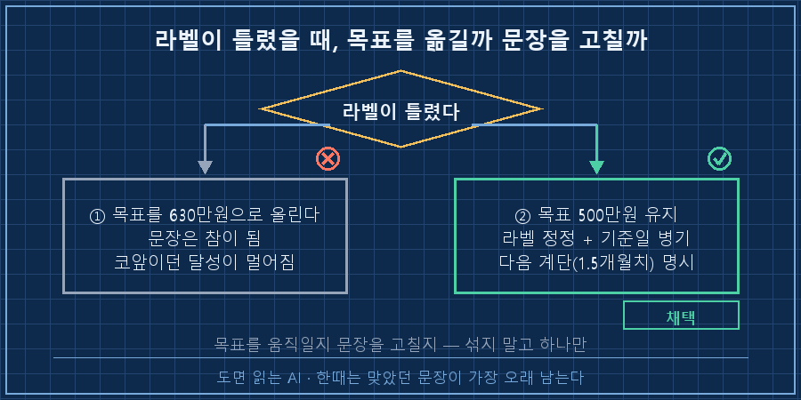
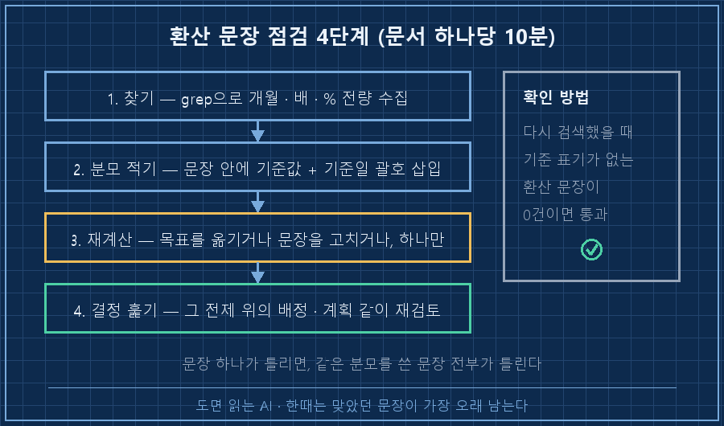

이번 달에 매달 나가는 고정지출이 하나 늘었습니다. 금액이 큰 것도 아니었어요. 그런데 그것 때문에 제 문서에 오래 붙어 있던 문장 하나가 틀린 문장이 됐습니다.
비상금 목표 500만원 = 약 1.5개월치 필수지출숫자는 안 틀렸어요. 500만원도 맞고, 나눗셈도 맞습니다. 그런데 이 줄은 틀렸습니다.
AI 문서 기준 변경에서 제일 늦게 고쳐지는 건 표 안의 숫자가 아니라 "○개월치"·"○배" 같은 환산 문장이에요. 숫자는 입력이 바뀌면 다시 계산되는데, 그 옆의 설명은 그냥 글자라서 아무도 다시 계산하지 않습니다.
결론부터 쓰면 이렇습니다. 환산 문장을 볼 때는 결과값 말고 분모를 보세요. 그리고 그 분모를 문장 안에 적어 넣으세요. 이번에 제가 한 일이 딱 그거였습니다.
2026년 9월 기준이고, 회사 일이 아니라 개인 가계·적립 관리용으로 굴리는 문서에서 나온 얘기예요. 도구는 안 가립니다. AI한테 문서를 계속 고치게 시키는 구조면 같은 자리에 걸려요.
"500만원 = 1.5개월치"는 언제부터 틀린 문장이 됐을까
저 문장에는 안 적힌 숫자가 하나 숨어 있습니다. 월 필수지출이에요. 350~400만원으로 나눠서 나온 값이 1.5개월이었어요. 그 분모는 문장 어디에도 없었고요.
앞에 적은 그 고정지출이 바로 이 분모로 들어갑니다. 가족 사정이라 줄일 수 있는 항목도 아니었고요.
분모가 커지면 같은 500만원이 버티는 기간은 짧아집니다. 다시 계산해봤어요.
| 월 필수지출 | 500만원이 버티는 기간 | 1.5개월 확보에 필요한 금액 |
|---|---|---|
| 375만원 | 1.33개월 | 562만원 |
| 390만원 | 1.28개월 | 585만원 |
| 400만원 | 1.25개월 | 600만원 |
| 420만원 | 1.19개월 | 630만원 |
1.5개월이 아니라 1.2~1.3개월이었습니다. 1.5개월을 진짜로 확보하려면 562~630만원이 있어야 했고요.
금액 차이보다 무서운 쪽은 이겁니다. 저는 그동안 "500만원만 채우면 한 달 반은 버틴다"고 알고 있었어요. 그 안심이 가짜였던 겁니다. 이런 건 평소엔 티가 안 나고 진짜 급할 때만 드러나죠..
저는 제조 현장 쪽 일을 15년쯤 했습니다. 설비에 붙은 명판 이야기를 하나 하면요. 기계를 개조하고 명판을 안 바꾸면, 다음 사람은 그 명판을 믿고 계산합니다. 그때 틀린 건 기계가 아니라 붙어 있는 라벨이에요. 제 문서에서 똑같은 일이 벌어져 있었습니다.
숫자는 다시 계산되는데, 설명은 왜 그대로 남을까
이유는 단순합니다. 둘이 사는 곳이 달라요.
표 안의 숫자 : 계산식이 만든다 → 입력 바뀌면 다음 실행 때 자동으로 새 값
설명 문장 : 사람이 썼다 → 입력이 바뀌어도 글자는 그대로AI한테 "숫자 업데이트해줘"라고 하면 표는 아주 잘 고쳐줍니다. 그런데 세 줄 위에 있는 산문 문장은 안 건드려요. 고치라고 시키지 않았으니까요. 그 문장이 방금 고친 숫자에서 파생됐다는 걸 알려면, 문장 안에 분모가 적혀 있어야 하는데 그게 없었던 거죠.

여기서 한 줄 고치고 끝내려다가, 혹시나 해서 같은 유형의 문장이 더 있는지 문서를 훑었습니다. 명령은 한 줄이에요.
grep -nE "[0-9](\.[0-9]+)?(개월|배|%)" 문서파일.md결과가 이랬습니다.
33: 중기 목표: 1,000만원 (약 3개월)
34: 장기 목표: 2,000만원 (약 6개월)같은 분모로 만든 환산 문장이 두 건 더 있었습니다. 처음에 찾은 한 줄만 고쳤으면 나머지 둘은 틀린 채로 남았을 거예요. 문장 하나가 틀렸다는 건 보통 그 문장만의 문제가 아니라, 같은 분모를 쓴 문장 전부의 문제더라고요..
혹시 AI가 정리해준 자료에 "○개월치", "○배 빠름" 같은 문장이 있으신가요? 그 문장 하나만 보지 마시고, 같은 기준으로 만든 다른 문장이 몇 개나 있는지 세어보시면 좋겠어요.
목표를 올릴까, 문장을 고칠까
여기서 갈림길이 나왔습니다. 둘 중 하나예요.
1. 목표를 630만원으로 올린다 → "1.5개월"이라는 말이 다시 참이 된다
2. 목표 500만원은 그대로 두고, 문장 쪽을 고친다
저는 2번을 골랐습니다. 500만원은 달성이 코앞이었거든요. 다 와서 결승선을 뒤로 밀면, 맞는 문서를 얻는 대신 다 온 기분을 잃습니다. 그러면 다음 달에 목표를 또 안 보게 돼요. 문서를 고치려다 습관을 깨는 셈이죠.
대신 고친 뒤에 한 줄을 더 붙였습니다.
[정정 전] 비상금 500만원 = 약 1.5개월치 필수지출
[정정 후] 비상금 500만원 = 1.19~1.33개월치
(기준: 월 필수지출 375~420만원, 2026-09-18 기준)
※ 달성 후 다음 계단 = 1.5개월치 확보(562~630만원)목표를 안 올린 대신, 올라갈 자리를 문서에 박아둔 겁니다. 이게 없으면 "라벨만 고치고 끝"이 되고, 그건 문장은 맞지만 행동은 안 바뀌는 상태니까요.

같은 날 하나가 더 걸렸습니다. 문장이 아니라 결정이 걸린 거예요.
만기되는 목돈 일부를 한쪽에 배정해둔 계획이 있었는데, 그 배정은 "월 납입액을 올린다"는 계획과 한 세트였습니다. 그 증액이 이번에 취소됐고요. 그럼 배정도 같이 없어져야 하는데, 배정만 혼자 살아 있었어요. 전제가 사라졌는데 결론이 남은 겁니다.
그래서 점검 대상에 문장뿐 아니라 결정도 넣었습니다. "이 결정은 무엇이 참이라서 내린 건가"를 한 줄로 적어두면, 그게 거짓이 되는 날 같이 딸려 나옵니다.
따라 하기: 환산 문장 점검 4단계
문서 한 개당 10분이면 됩니다.
1. 찾기 : "개월", "배", "%", "치" 로 문서 전체를 검색한다
(위 grep 한 줄이면 줄 번호까지 나옴)
2. 분모 적기: 문장마다 "무엇으로 나눈 값인가"를 괄호로 박아 넣는다
예) (기준: 월 필수지출 375~420만원, 2026-09-18 기준)
3. 재계산 : 지금 값으로 다시 나눠본다
→ 다르면 "목표를 옮긴다" 또는 "문장을 고친다" 중 하나만 고른다
4. 결정 훑기: 그 전제 위에 얹혀 있던 결정·배정을 목록으로 뽑아 같이 재검토확인 방법은 이거 하나면 충분해요. 1번 검색을 다시 돌렸을 때, 기준 표기가 없는 환산 문장이 0건이면 통과입니다. 하나라도 괄호가 비어 있으면 그 문장은 다음번에 또 늙어요.
솔직히 적자면 제 문서도 아직 0건이 아닙니다. 처음 돌린 날 3건이 걸렸고, 급한 한 건만 그 자리에서 고쳤어요. 나머지 두 건은 목록에만 올려둔 상태입니다. 대신 이제는 어디가 안 고쳐졌는지를 아는 상태가 됐네요!

이 얘기 하면 꼭 나오는 질문들
Q. AI한테 "문서 전체 최신화해줘"라고 하면 저 문장도 같이 안 고쳐주나요?
제 경험으론 잘 안 고쳐집니다. 표와 숫자는 성실하게 손보는데, 산문 문장은 바꿔도 되는지 확신이 없으면 잘못 건드리지 않는 쪽으로 움직이더라고요. 그래서 문장 안에 기준을 적어 넣었습니다. 근거가 문장 안에 있으면 그때부터는 AI도 고칠 대상으로 봅니다.
Q. 분모를 매번 괄호로 적으면 문서가 지저분해지지 않나요?
조금 지저분해집니다. 그래도 저는 적어요. 깔끔한 문장 하나가 반년 동안 틀린 안심을 주는 것보다는 나으니까요. 대신 괄호 안은 기준값 + 기준일 두 개로만 짧게 씁니다.
Q. 이건 AI가 만든 문서만의 문제는 아니지 않나요?
맞아요. 사람이 쓴 문서도 똑같이 늙습니다. 다만 AI를 쓰면 고치는 횟수가 확 늘어나요. 저도 이 문서를 한 달에 몇 번씩 고칩니다. 고칠 때마다 숫자만 새로워지고 설명은 그대로 남으니까, 고치는 속도가 빨라질수록 격차도 빨리 벌어져요.
AI 문서 기준 변경이라고 하면 보통 숫자를 다시 계산하는 일로 생각하는데, 이번에 걸린 건 숫자에 붙은 말을 다시 계산하는 쪽이었어요. 문서에서 제일 위험한 문장은 틀린 숫자가 아니라 한때는 맞았던 문장이더라고요. 저 "1.5개월"도 처음 쓸 때는 정확했거든요..
makefield.ai에는 제가 고친 문장들이 고치기 전 버전과 나란히 붙어 있어요. 틀린 채로 제일 오래 둔 게 뭔지 찾아보려고 그렇게 남깁니다.
여러분 문서에는 "○개월치", "○배" 같은 문장이 몇 개나 들어 있나요? 그중에 기준이 적혀 있는 건 몇 개인지 한번 세어보세요.
태그: #AI문서기준변경 #AI문서관리 #AI자료검산 #AI환산오류 #AI문서수정 #AI결과물검수 #AI팩트체크 #AI데이터정합성 #AI지식관리 #AI에게일시키기 #AI자동화구축 #개인AI에이전트 #문서버전관리 #파이썬자동화 #도면읽는AI